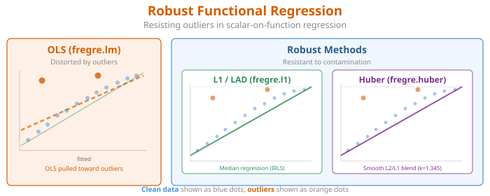
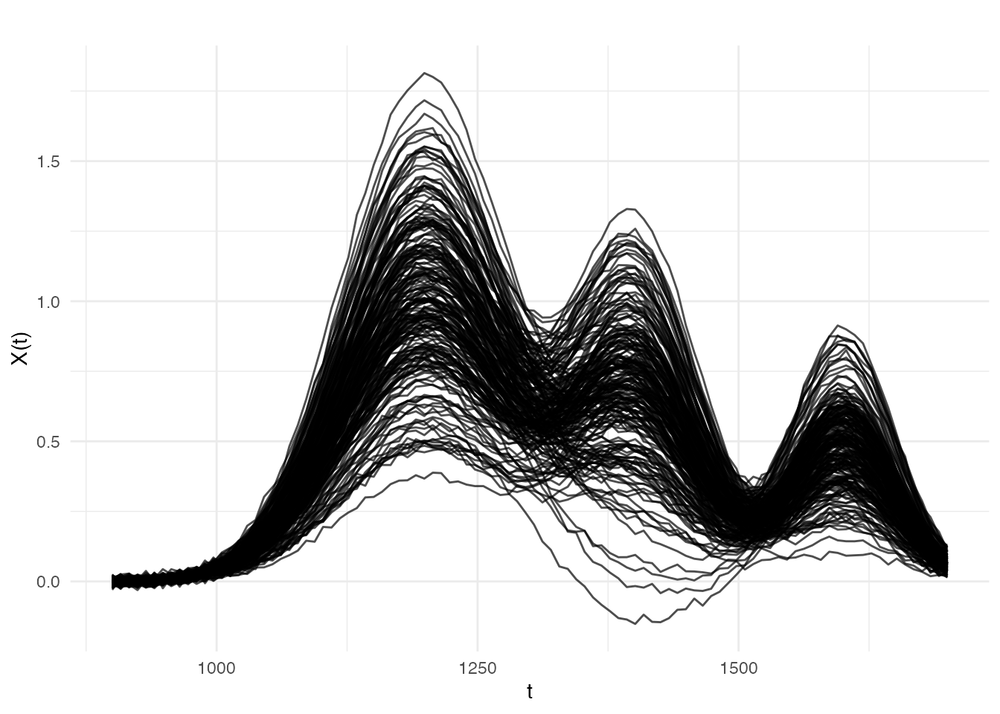
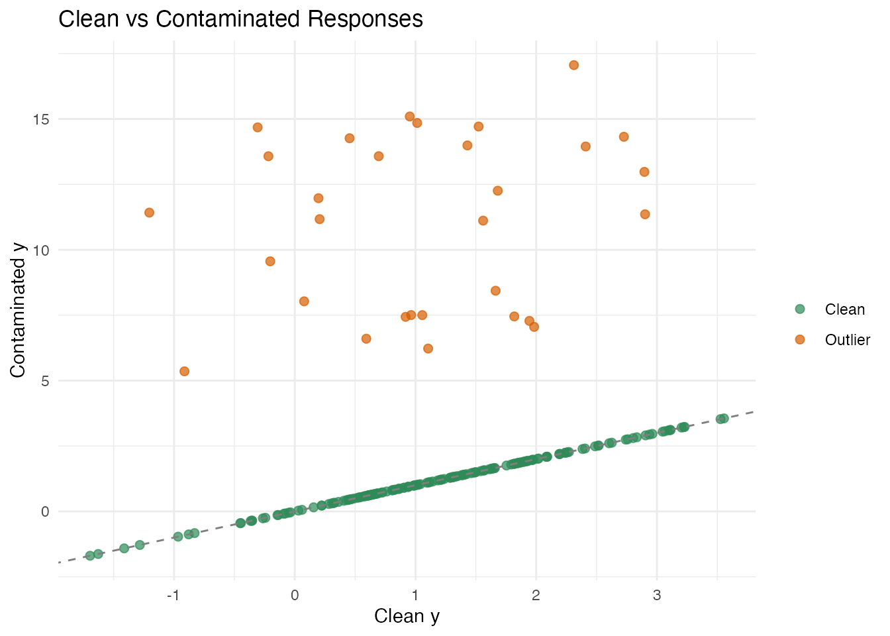
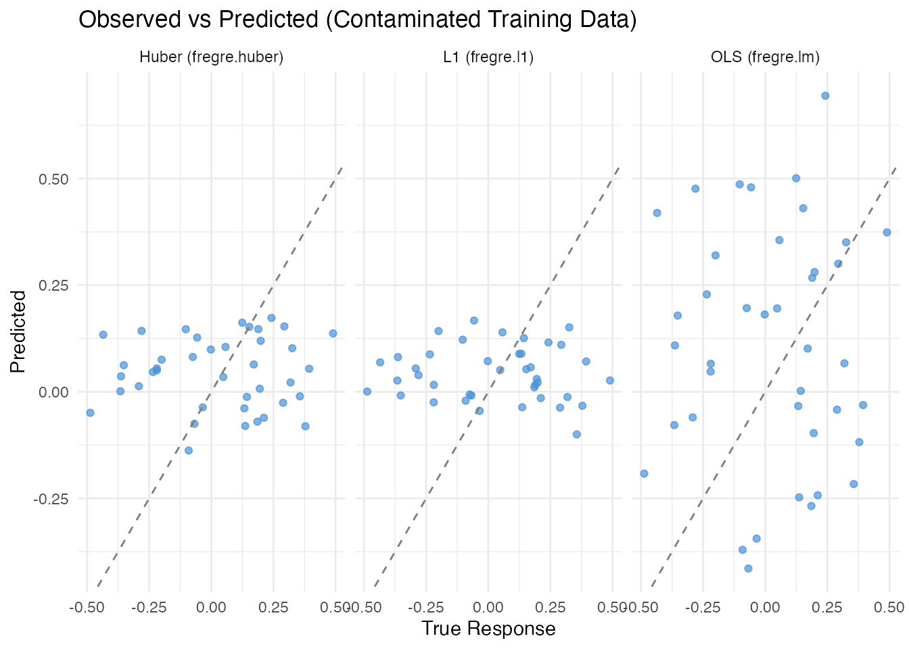

Introduction
Standard least-squares regression estimates the conditional mean of the response by minimizing . This works well when the data are clean, but even a single outlier can drastically distort the fitted model. In functional data settings the problem is amplified: contaminated spectra, sensor glitches, or mislabelled samples can silently wreck an OLS fit.
fdars provides two robust alternatives to
fregre.lm(): - fregre.l1() —
L1 / Least Absolute Deviation (median) regression -
fregre.huber() — Huber M-estimation, a
smooth blend of L2 and L1
Both use the same FPC projection strategy as fregre.lm()
but replace the OLS loss with a robust loss, solved via iteratively
reweighted least squares (IRLS). The result is an
fregre.robust S3 object with the same interface:
predict(), print(), and access to fitted
values, residuals, and
.

Which Method Should I Use?
| Method | Function | Loss | Key parameter | Best when |
|---|---|---|---|---|
| OLS | fregre.lm() |
(# components) | Clean data; full diagnostics ecosystem | |
| L1 (LAD) | fregre.l1() |
(# components) | Heavy contamination; outliers in | |
| Huber | fregre.huber() |
Huber loss | , (tuning) | Moderate contamination; efficiency near OLS |
Quick decision rule:
- Start with
fregre.lm()— it is the most efficient estimator when the data are clean and has full downstream support (explainability, diagnostics, conformal prediction). - If you suspect outliers in the response
,
fit
fregre.huber()as a robust check. With the default it retains 95% asymptotic efficiency under Gaussian errors. - If contamination is severe (> 10–15% of observations), use
fregre.l1()for maximum resistance.
Simulating Clean and Contaminated Data
We simulate a near-infrared (NIR) spectroscopy scenario: 200 absorbance spectra measured at 100 wavelengths, with a linear relationship between the spectra and a scalar property (e.g., moisture content). We then contaminate 15% of the responses with large one-sided errors — simulating systematic measurement faults such as detector saturation or sample mislabelling.
set.seed(42)
# --- Dimensions ---
n <- 200 # number of spectra
m <- 100 # number of wavelength channels
t_grid <- seq(900, 1700, length.out = m) # NIR wavelength range (nm)
# --- Generate smooth spectra ---
# Each spectrum is a sum of three smooth absorption bands plus noise.
# The amplitude of each band varies across samples.
X <- matrix(0, n, m)
amp1 <- rnorm(n, 1.0, 0.5) # dominant band at 1200 nm
amp2 <- rnorm(n, 0.5, 0.15) # secondary band at 1400 nm
amp3 <- rnorm(n, 0.3, 0.08) # minor band at 1600 nm
for (i in 1:n) {
X[i, ] <- amp1[i] * dnorm(t_grid, 1200, 80) * 200 +
amp2[i] * dnorm(t_grid, 1400, 60) * 200 +
amp3[i] * dnorm(t_grid, 1600, 50) * 200 +
rnorm(m, sd = 0.01)
}
fd <- fdata(X, argvals = t_grid)
# --- Clean response ---
# Moisture content depends linearly on the 1200 nm and 1400 nm band amplitudes.
y_clean <- 2.0 * amp1 - 1.5 * amp2 + rnorm(n, sd = 0.3)
# --- Contaminated response (15% one-sided outliers) ---
# Simulates detector saturation: affected readings are biased *upward*.
y_contam <- y_clean
n_outlier <- round(0.15 * n) # 30 outliers
outlier_idx <- sample(n, n_outlier)
y_contam[outlier_idx] <- y_contam[outlier_idx] + runif(n_outlier, 5, 15)The contamination is one-sided (all positive), which is the worst case for OLS: the bias systematically shifts the coefficient estimates. Clean errors have ; outlier shifts range from 5 to 15 — roughly 15–50 times the noise scale.
plot(fd, main = "NIR Absorbance Spectra",
xlab = "Wavelength (nm)", ylab = "Absorbance")
df_y <- data.frame(
idx = 1:n,
clean = y_clean,
contaminated = y_contam,
is_outlier = seq_len(n) %in% outlier_idx
)
ggplot(df_y, aes(x = clean, y = contaminated, color = is_outlier)) +
geom_point(alpha = 0.7, size = 2) +
geom_abline(slope = 1, intercept = 0, linetype = "dashed", color = "gray50") +
scale_color_manual(values = c("FALSE" = "#2E8B57", "TRUE" = "#D55E00"),
labels = c("Clean", "Outlier")) +
labs(title = "Clean vs Contaminated Responses",
x = "Clean y", y = "Contaminated y", color = "")
OLS Regression — Baseline
We first fit ordinary least squares via fregre.lm() on
both the clean and contaminated data.
# --- Clean data ---
fit_ols_clean <- fregre.lm(fd, y_clean, ncomp = 5)
# --- Contaminated data ---
fit_ols_contam <- fregre.lm(fd, y_contam, ncomp = 5)
cat("OLS R-squared (clean):", round(fit_ols_clean$r.squared, 4), "\n")
#> OLS R-squared (clean): 0.9264
cat("OLS R-squared (contaminated):", round(fit_ols_contam$r.squared, 4), "\n")
#> OLS R-squared (contaminated): 0.0744On clean data, OLS performs well (R² > 0.9). On contaminated data, the 30 one-sided outliers systematically bias the coefficient estimates, inflating the residuals for all observations — even the clean ones. This is the hallmark of OLS fragility: outliers have unbounded influence.
L1 (LAD) Regression
fregre.l1() minimises the sum of absolute residuals
rather than squared residuals. Because the absolute value penalises
large residuals linearly (not quadratically), outliers exert much less
influence on the fit.
# --- Clean data ---
fit_l1_clean <- fregre.l1(fd, y_clean, ncomp = 5)
# --- Contaminated data ---
fit_l1_contam <- fregre.l1(fd, y_contam, ncomp = 5)
cat("L1 R-squared (clean):", round(fit_l1_clean$r.squared, 4), "\n")
#> L1 R-squared (clean): 0.9246
cat("L1 R-squared (contaminated):", round(fit_l1_contam$r.squared, 4), "\n")
#> L1 R-squared (contaminated): -0.0834Examining the IRLS Weights
# Observations with small weights are effectively identified as outliers
w <- fit_l1_contam$weights
cat("Mean weight (clean obs):", round(mean(w[-outlier_idx]), 3), "\n")
#> Mean weight (clean obs): 35310.64
cat("Mean weight (outlier obs):", round(mean(w[outlier_idx]), 3), "\n")
#> Mean weight (outlier obs): 0.115
cat("Iterations:", fit_l1_contam$iterations, "\n")
#> Iterations: 69
cat("Converged:", fit_l1_contam$converged, "\n")
#> Converged: TRUEHuber M-Estimation
Huber’s M-estimator provides a smooth compromise between L2 and L1. The Huber loss function is:
where is a tuning parameter. For small residuals (), the loss is quadratic (like OLS); for large residuals (), the loss is linear (like L1).
# --- Default k = 1.345 ---
fit_huber_contam <- fregre.huber(fd, y_contam, ncomp = 5)
cat("Huber R-squared (contaminated):", round(fit_huber_contam$r.squared, 4), "\n")
#> Huber R-squared (contaminated): -0.0464
cat("Iterations:", fit_huber_contam$iterations, "\n")
#> Iterations: 7
cat("Converged:", fit_huber_contam$converged, "\n")
#> Converged: TRUEThe Tuning Parameter
| Behaviour | Efficiency (Gaussian) | Robustness | |
|---|---|---|---|
| 0.5 | Very aggressive | ~72% | High |
| 1.0 | Moderate | ~89% | Good |
| 1.345 | Default | 95% | Good |
| 2.0 | Mild | ~98% | Moderate |
| Identical to OLS | 100% | None |
# Compare weights across k values
w_default <- fit_huber_contam$weights
cat("Huber k=1.345:\n")
#> Huber k=1.345:
cat(" Mean weight (clean):", round(mean(w_default[-outlier_idx]), 3), "\n")
#> Mean weight (clean): 1
cat(" Mean weight (outlier):", round(mean(w_default[outlier_idx]), 3), "\n")
#> Mean weight (outlier): 0.159Comparison: OLS vs L1 vs Huber
We compare all three methods on clean and contaminated data using a train/test split.
# --- Train/test split ---
set.seed(123)
train_idx <- sample(n, 160)
test_idx <- setdiff(1:n, train_idx)
fd_train <- fd[train_idx, ]
fd_test <- fd[test_idx, ]
# ==========================================
# Clean data
# ==========================================
y_tr_clean <- y_clean[train_idx]
y_te_clean <- y_clean[test_idx]
fit_ols_c <- fregre.lm(fd_train, y_tr_clean, ncomp = 5)
fit_l1_c <- fregre.l1(fd_train, y_tr_clean, ncomp = 5)
fit_hub_c <- fregre.huber(fd_train, y_tr_clean, ncomp = 5)
pred_ols_c <- predict(fit_ols_c, fd_test)
pred_l1_c <- predict(fit_l1_c, fd_test)
pred_hub_c <- predict(fit_hub_c, fd_test)
# ==========================================
# Contaminated data
# ==========================================
y_tr_contam <- y_contam[train_idx]
fit_ols_d <- fregre.lm(fd_train, y_tr_contam, ncomp = 5)
fit_l1_d <- fregre.l1(fd_train, y_tr_contam, ncomp = 5)
fit_hub_d <- fregre.huber(fd_train, y_tr_contam, ncomp = 5)
# Predict on test set --- compare to *clean* truth
pred_ols_d <- predict(fit_ols_d, fd_test)
pred_l1_d <- predict(fit_l1_d, fd_test)
pred_hub_d <- predict(fit_hub_d, fd_test)Results Table
rmse <- function(y, yhat) sqrt(mean((y - yhat)^2))
r2 <- function(y, yhat) 1 - sum((y - yhat)^2) / sum((y - mean(y))^2)
results <- data.frame(
Method = c("OLS (fregre.lm)", "L1 (fregre.l1)", "Huber (fregre.huber)"),
RMSE_Clean = round(c(rmse(y_te_clean, pred_ols_c),
rmse(y_te_clean, pred_l1_c),
rmse(y_te_clean, pred_hub_c)), 4),
R2_Clean = round(c(r2(y_te_clean, pred_ols_c),
r2(y_te_clean, pred_l1_c),
r2(y_te_clean, pred_hub_c)), 4),
RMSE_Contam = round(c(rmse(y_te_clean, pred_ols_d),
rmse(y_te_clean, pred_l1_d),
rmse(y_te_clean, pred_hub_d)), 4),
R2_Contam = round(c(r2(y_te_clean, pred_ols_d),
r2(y_te_clean, pred_l1_d),
r2(y_te_clean, pred_hub_d)), 4)
)
knitr::kable(results,
col.names = c("Method", "RMSE", "R\u00b2", "RMSE", "R\u00b2"),
caption = "Test-set performance on clean vs contaminated training data"
)| Method | RMSE | R² | RMSE | R² |
|---|---|---|---|---|
| OLS (fregre.lm) | 0.2732 | 0.9424 | 1.6255 | -1.0393 |
| L1 (fregre.l1) | 0.2591 | 0.9482 | 0.2760 | 0.9412 |
| Huber (fregre.huber) | 0.2732 | 0.9424 | 0.3880 | 0.8838 |
Visualizing Predictions
df_pred <- data.frame(
Observed = rep(y_te_clean, 3),
Predicted = c(pred_ols_d, pred_l1_d, pred_hub_d),
Method = rep(c("OLS (fregre.lm)", "L1 (fregre.l1)", "Huber (fregre.huber)"),
each = length(y_te_clean))
)
ggplot(df_pred, aes(x = Observed, y = Predicted)) +
geom_point(alpha = 0.7, color = "#4A90D9") +
geom_abline(slope = 1, intercept = 0, linetype = "dashed", color = "gray50") +
facet_wrap(~ Method) +
labs(title = "Observed vs Predicted (Contaminated Training Data)",
x = "True Response", y = "Predicted")
Explainability Support
Both fregre.l1() and fregre.huber() models
support the full explainability ecosystem: PDP, ALE, SHAP, permutation
importance, saliency maps, LIME, and Sobol indices — the same tools
available for fregre.lm():
# PDP for robust model
pdp <- fregre.pdp(fit_l1_contam, fd, component = 1)
cat("PDP grid values:", length(pdp$grid_values), "points\n")
#> PDP grid values: 20 points
# SHAP values
shap <- fregre.shap(fit_l1_contam, fd)
cat("SHAP values computed for", nrow(shap$shap_values), "observations\n")
#> SHAP values computed for observationsWhen to Use Robust Regression
Use fregre.l1() when:
- You suspect a substantial fraction (> 5%) of response values may be corrupted by gross errors.
- You want maximum resistance to outliers and are willing to accept a small loss of efficiency on clean data.
Use fregre.huber() when:
- You want a compromise: near-OLS efficiency on clean data with protection against moderate contamination.
- You are unsure whether outliers are present — Huber is a safe default that costs very little when the data are clean.
Stick with fregre.lm() when:
- The data are clean and well-curated.
- You need the full downstream ecosystem: diagnostics (Cook’s
distance, leverage, DFBETAS), uncertainty quantification (conformal
prediction), and cross-validation (
fregre.lm.cv()).
Mathematical Details
FPC Projection
Both robust methods begin the same way as fregre.lm():
perform FPCA on the functional predictor and project each curve onto
principal components:
This reduces the infinite-dimensional functional regression to a finite-dimensional problem:
The only difference from fregre.lm() is the loss
function used to estimate
.
See Also
-
vignette("articles/scalar-on-function")— overview of all scalar-on-function methods -
vignette("articles/outlier-detection")— detecting outliers in functional data -
vignette("articles/regression-diagnostics")— influence and diagnostics forfregre.lm() -
vignette("articles/explainability")— interpretingfregre.lm()models
References
- Huber, P.J. (1964). Robust Estimation of a Location Parameter. Annals of Mathematical Statistics, 35(1), 73–101.
- Huber, P.J. and Ronchetti, E.M. (2009). Robust Statistics, 2nd ed. Wiley.
- Maronna, R.A., Martin, R.D., Yohai, V.J., and Salibian-Barrera, M. (2019). Robust Statistics: Theory and Methods, 2nd ed. Wiley.
- Cardot, H., Crambes, C., and Sarda, P. (2005). Quantile Regression when the Covariates are Functions. Journal of Nonparametric Statistics, 17(7), 841–856.